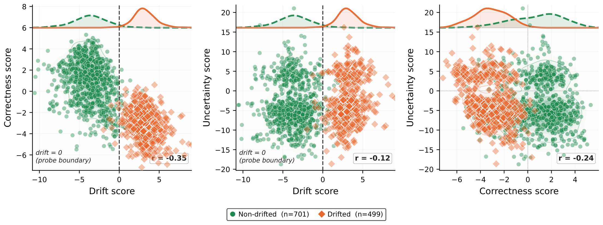

The Geometry of Forgetting: Temporal Knowledge Drift as an Independent Axis in LLM Representations
Investigating how outdated knowledge lives inside language models, and how dedicated probes can identify temporal knowledge drift in their representations.